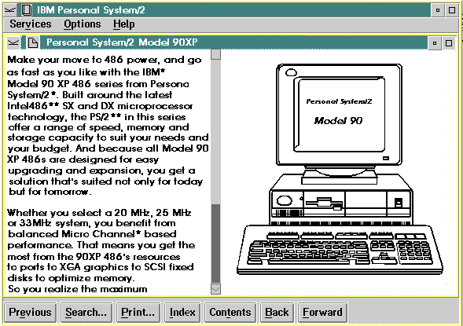

A window is the area of the screen in which information is displayed. As an author of online information, you can customize windows. Different windowing effects are achieved with the IPF tagging language. For example, a window can be split so that scrollable text can be displayed beside a stationary illustration that the text describes.
The following figure shows an IPF split-window design that describes the IBM* Personal System/2* Model 90 XP 486** series.
* Trademark of the IBM Corporation
** Trademark of Intel Corporation

IPF Split Window
For more information, see Customizing Windows.